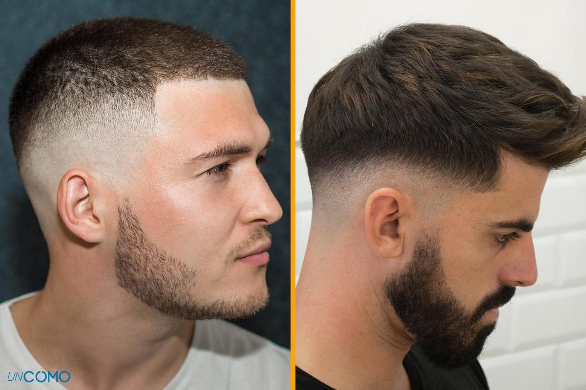
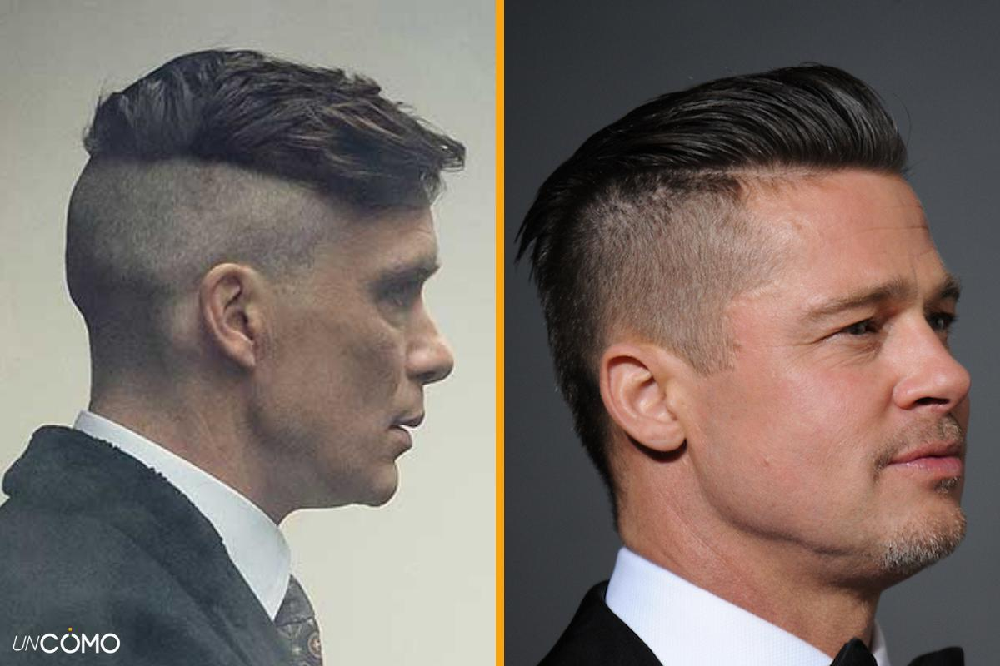

Corte degradado con líneas
Muchos actores, futbolistas y otras celebridades se han apuntado a este peinado con un marcado caracter dentro de los cortes de pelo rapado por los lados para hombre con degradado lateral. La idea es dejar la parte superior más larga mientras cortas el pelo por ambos lados y hacer una línea que, en muchas ocasiones, se realiza a mano alzada por el barbero. Si confías en tu peluquero, esta es la opción perfecta para lucir este tipo de dibujos en los laterales. ¿Te animas?
Corte estilo mohicano
La idea es realizar el degradado en los laterales dejando el pelo más corto y un mayor volumen en la parte superior, que te servirá para peinar tu cresta. Si eres de los atrevidos, esta opción es para ti.
Corte buzz cut
El buzz cut es un estilo de corte de pelo para hombre que puede aplicarse a cualquier cabeza, independientemente de la textura del pelo o de su largo. La idea es cortar bien corto a máquina el pelo, manteniéndolo algo más largo en la parte superior y haciendo un degradado lateral. Eso sí, aunque a la vista se vean dos tamaños, uno en los laterales y otro en la parte superior, la idea es lucir el cabello prácticamente rapado.

Corte degradado
El degradado clásico y tradicional es suave y no demasiado marcado, por lo que para crear ese efecto puede realizarse con tijeras fácilmente. Las variedades más modernas admiten más atrevimiento y contraste en el rapado lateral. En resumen, lucir un corte degradado clásico será sinónimo de naturalidad y frescura, puesto que es un corte que suele quedar bien a cualquier hombre.
Corte militar
La idea del corte militar consiste en raparte a un número muy bajo (entre 0 y 0.5) y dejar sin rapar una pequeña porción de la parte superior, que podrás cortar con la máquina entre el 1 y el 5, en función de tus gustos y preferencias. En este corte el degradado es opcional pero lo que es básico es la altura de los lados, puesto que para lograr la característica militar deberás subir mucho las líneas de las sienes que es la encargada de separar y hacer el contraste entre las dos áreas del corte..

Corte undercut
La base es la misma que para los anteriores: se trata de dejar la nuca y los laterales cortos o muy cortos, mientras mantenemos una media o larga melena en la parte superior. El undercut se diferencia del militar puesto que el primero es más moderado y el segundo es más radical, pero en ambos podrás decidir si llevar a cabo o no el degradado lateral.